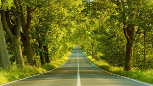
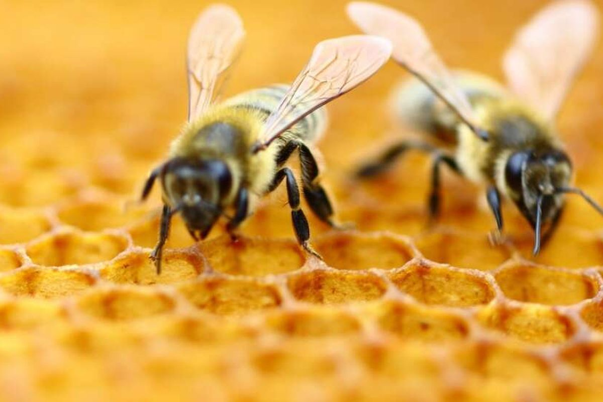
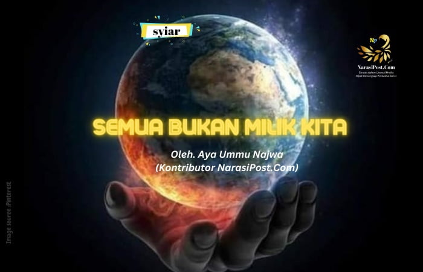

Konten Gratis Menarik
Fakta Menarik
- Lebah dapat terbang hingga 15 mil per jam.
- Pohon bambu dapat tumbuh hingga 91 cm dalam sehari.
- Setiap tahun, sekitar 8 juta ton plastik berakhir di lautan.
- Lebih dari 80% dari semua spesies hewan dan tumbuhan hidup di hutan hujan tropis.
- Manusia dan chimpanzee berbagi sekitar 98% DNA yang sama.
Kutipan Inspiratif
"Kami tidak mewarisi bumi ini dari nenek moyang kita, tetapi meminjamnya dari anak cucu kita."
"Setiap tindakan kecil dapat menciptakan gelombang besar di lautan."
Tips Sehari-hari
- Gunakan botol air isi ulang untuk mengurangi penggunaan plastik sekali pakai.
- Cobalah untuk berjalan kaki atau bersepeda jika memungkinkan.
- Matikan lampu dan peralatan elektronik saat tidak digunakan.
- Daur ulang kertas, plastik, dan kaca untuk membantu mengurangi limbah.
- Tanam tanaman di rumah untuk meningkatkan kualitas udara.